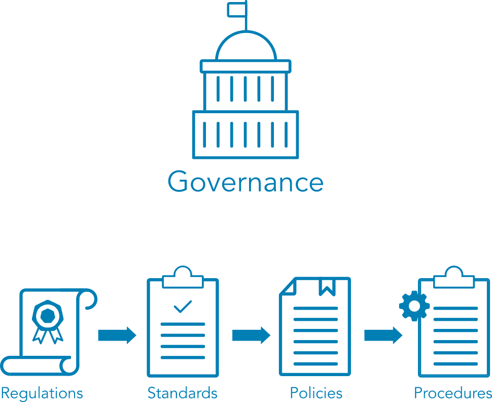

#
1.4 Understand Governance Elements and Processes
#
Governance Elements
For an organization to complete it's objectives requires that decisions are made, rules and practices are defined, and policies and procedures are in place to guide the organization in its pursuit of achieving its goals and mission.

- An organization is guided by laws and regulations created by governments to enact public policy.
- Laws and regulations guide the development of standards, which cultivate policies, which result in procedures.
#
Relation between Regulations, Standards, Policies and Procedures
- Regulations are commonly issued in the form of laws, usually from government and typically carry financial penalties for noncompliance.
- Standards are often used by governance teams to provide a framework to introduce policies and procedures in support of regulations.
- Policies are put in place by organizational governance, such as executive management, to provide guidance in all activities to ensure that the organization supports industry standards and regulations.
- Procedures are the detailed steps to complete a task that support departmental or organizational policies.
#
1.4.1 Policies
- Policy is informed by applicable law(s) and specifies which standards and guidelines the organization will follow.
- They are broad, but not detailed; it establishes context and sets out strategic direction and priorities.
- They are used to moderate and control decision-making, to ensure compliance when necessary and to guide the creation and implementation of other policies.
- They are implemented or carried out by people.
#
1.4.2 Procedures
- Procedures define the explicit, repeatable activities necessary to accomplish a specific task or set of tasks.
- They provide supporting data, decision criteria or other explicit knowledge needed to perform each task.
- They establish the measurement criteria and methods to use to determine whether a task has been successfully completed.
- They need to properly documented on how to do something and follow them is necessary for deriving the maximum organizational benefits from procedures.
#
1.4.3 Standards
- They cover a broad range of issues and ideas and may provide assurance that an organization is operating with policies and procedures that support regulations and are widely accepted best practices.
#
International Organization for Standardization (ISO)
- They develop and publish international standards on a variety of technical subjects, including information systems and information security, as well as encryption standards.
- ISO solicits input from the international community of experts to provide input on its standards prior to publishing.
- The publish documents needs to be purchased.
#
National Institute of Standards and Technology (NIST)
- They publish a variety of technical standards in addition to information technology and information security standards.
- Many of the standards issued by NIST are requirements for U.S. government agencies and are considered recommended standards by industries worldwide.
- The published documents are free to download from their website.
#
Internet Engineering Task Force (IETF)
They are standards in communication protocols that ensure all computers can connect with each other across borders, even when the operators do not speak the same language.
#
Institute of Electrical and Electronics Engineers (IEEE)
They set standards for telecommunications, computer engineering and similar disciplines.
#
1.4.4 Regulations and Laws
- Regulations are associated fines and penalties can be imposed by governments at the national, regional or local level.
- As they are imposed and enforced differently in different parts of the world.
#
Health Insurance Portability and Accountability Act (HIPAA)
- This is the law that governs the use of protected health information (PHI) in the United States.
- Violation of the HIPAA rule carries the possibility of fines and/or imprisonment for both individuals and companies.
#
General Data Protection Regulation (GDPR)
- This was enacted by the European Union (EU) to control use of Personally Identifiable Information (PII) of its citizens and those in the EU.
- It includes provisions that apply financial penalties to companies who handle data of EU citizens and those living in the EU even if the company does not have a physical presence in the EU, giving this regulation an international reach.